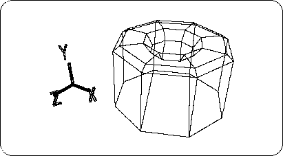
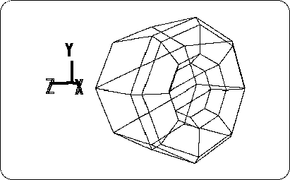
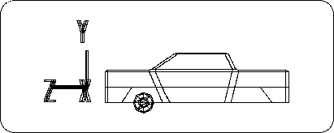
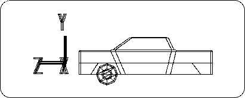

Return to previous page | Return to menu | Go to next page
As a tire, it is almost complete, but there are still things to do. That is the polygon reduction of the wheel part. In the same way as when the polygons on the bottom surface are reduced, the polygons on the concave parts of the surface are
[Mesh] → [Edge] → Right mouse button (Remove edge)
[Mesh] → [Vertex] → Right mouse button (Remove vertex) (or [Effect] → [Cleanup])
[Mesh] → [Edge] → Left mouse button (Add ONE edge)
To change from 8 polygons to 3 polygons (Figure 3-43).

Change from TAG mode to OBJ mode here.
Next, click the triangle of [Rot] , and
X: 0, Y: 0, Z: -90
And click “Set” (Figure 3-44).

The wheel is now in the + X direction. I want to make this a standard, so
[Effect] → [Freeze] → [Rotation]
Run RotZ is changed from -90.0000 to 0.0000.
Select the “Cube” that is currently hidden on the Shematic screen (Spacebar + left mouse button) . And
[Display] → [Hide] → [Toggle Selection]
Let's run A car object will appear.
Place the cursor in the Perspective screen and press the “A” key . Then, Zoom is executed so that the whole displayed object is just fit.
“A” key: [Display] → [Frame All]
Now select the tire “Cyl” again on the Schematic screen (Spacebar + left mouse button) . Then move the tires to fit the body tire room.
Click so that the [Trans] icons are all highlighted in blue.
Looking at the bottom right of the screen, the display changes as LCL, GBL, PAR, REF, DRG.
In this state, if you select Scale, Rot, or Trans, the displayed mode will change as follows.
OBJ TAG CTR TXT --- ⇒ XYZ UNI VOL -----
In most cases, choose XYZ.
OBJ TAG CTR TXT ---> LCL GBL ADD REF PLN
In most cases, select ADD.
OBJ TAG CTR TXT --- ⇒ LCL GBL PAR REF DRG
The three most commonly used are LCL, GBL, and DRG.
In this case, click GBL because you want to move the tire around the global axis.
Next, look at the Top window, hold down the right mouse button and move the tire in the + Z direction (about 1.1600), and then hold down the left button and the + X direction. Move to (about 0.8600).
Next, when I thought while looking at the Right window ... I changed the Right window to “Schematic”, so it is not displayed. Let's change the “Front” window in the lower left to “Right”.
Click the place where “Front” is displayed with the left mouse button.
When the menu opens, select “Right”.
Look at the Right window and hold down the middle mouse button and move the tire in the -Y direction (about -0.3400). The tire is now in the car body. (Figure 3-45)

Looking at the tires here, it feels much smaller than the car body. I don't want to run with such a small tire, so let's make the tire bigger.
First, select OBJ mode.
Click so that the entire [Scale] icon is highlighted in blue. Next, hold down the middle and right mouse buttons to enlarge the entire tire.
ScaleY: 1.4100, ScaleZ: 1.4100 (Figure 3-46).
It is also possible to set the size by numerical input.
If you increase it, it will be based on that size, so
[Effect] → [Freeze] → [Scaling]
Run ( [All] will freeze the Trans information, so it is not used here).

This completes one tire.